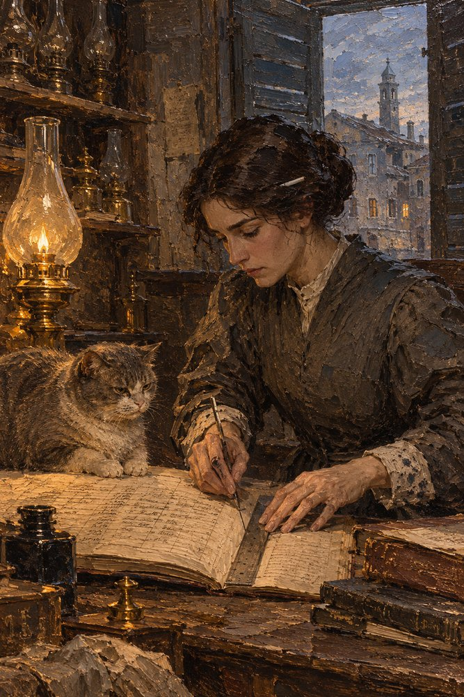

Record 2 of 15
The column on the right
On the nineteenth of Lorren, in the ledger-room above the lamp-store of Focolare, Agata, thirty-four, comes to enter the difference between Souls and Measure and finds that the form did not provide for a surplus. She rules a column herself with her father’s steel straight-edge, heads it Excess and writes beneath it a hundred and fourteen, while Stoppino, the grey lamp-store cat, lies across the open parish book.
By lamplight a dark-haired woman with a pencil in her hair rules a line across an open ledger with a straight-edge; a big grey cat sits on the desk, shelves of lamp chimneys fill the wall behind her, and an open shutter looks out on a bell tower and a lagoon town at dusk..